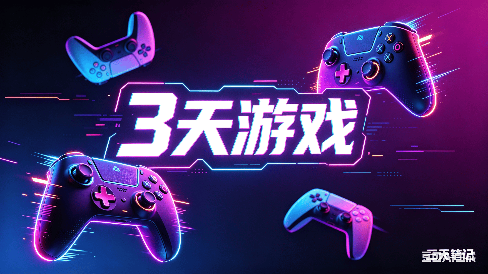

《塞尔达黄昏公主修订版》反转！昔日不看好

谁还在苦等《塞尔达传说：风之杖》高清登陆Switch？那个被无数玩家奉为圭臬的海拉鲁大冒险，至今杳无音讯。
但万万没想到，半路杀出个程咬金！曾经不被看好的《塞尔达传说：黄昏公主》，居然抢先一步，被曝出正在为Switch2打造“修订版”。这波操作，直接把“舅舅党”和万年“等等党”都看懵了——不是简单的“冷饭热炒”，而是基于Wii U版底子的全面进化。今天，咱就来深扒这背后的故事。
圈内知名爆料者Nash Weedle放出重磅情报，任天堂正着手开发《塞尔达传说：黄昏公主》修订版，将专属登陆Switch2，彻底填补新主机的经典老作阵容空白。而这次修订并非从初代原版下手，而是以2016年Wii U平台的《黄昏公主HD》为核心基底优化升级，整体底子远超原版画质。
有意思的是，这位爆料者此前极其不看好黄昏公主和风之杖的移植计划。他早前公开表示，旧主机硬件限制太大，很难给两款作品添加全新内容，强行移植只会让玩家体验到敷衍复刻的割韭菜操作。
那为啥态度突然180度大转弯？原因就仨字：Switch2。随着新主机硬件参数逐步曝光，性能上限大幅提升，完全能支撑老作品的内容拓展，不用再局限于简单的高清贴图替换。性能兜底了，态度就变了，就这么简单。
不过这次最让玩家意外的，莫过于两款经典作品的进度反差。常年霸占移植传闻榜单的《风之杖》，目前依旧搁置，短期根本没有上线计划。反观热度稍逊的黄昏公主，已经进入实质性开发阶段。这波操作直接颠覆了往年认知，也让无数蹲守风之杖移植的老玩家直呼意难平。
回顾历史，《塞尔达传说：黄昏公主》最早在2006年同步登陆GameCube和Wii双平台，是妥妥的时代标杆。2016年任天堂推出Wii U专属高清复刻版，优化了画质、场景建模与UI界面，成为很多老玩家的童年本命。如果本次爆料属实，这将是该作品第二次高清化升级，也是它首次登陆任天堂混合架构主机。
对于普通玩家而言，这次升级的体验提升十分直观。Wii U版虽有画质升级，但受限于老旧性能，运行偶尔会出现掉帧、场景加载卡顿，刷长副本时极易打断节奏。依托Switch2更强性能，修订版能实现全程稳定高帧运行，复杂迷宫和大型BOSS战不再卡顿。更关键的是，掌机模式适配优化后，以往只能坐在电视前玩的大作，现在随时随地都能开荒肝进度。
当然，咱也得理性看待。目前所有优化内容、新增玩法均属爆料信息，任天堂官方尚未发布任何公告。Nash Weedle过往爆料有真有假，一切还需以官方直面会为准，谨慎吃瓜，不盲目跟风。
不得不承认，在全新3D塞尔达遥遥无期的当下，让经典老作在Switch2上焕发新生，确实是任天堂稳住阵脚的最优解。只要任天堂拿出当年做《黄昏公主》一半的诚意，这碗“冷饭”咱就含泪吃下了！
最后想问问大家：你是苦等《风之杖》的“遗老”，还是期待《黄昏公主》修订版的“真香党”？你最希望修订版优化哪些老版本的痛点？评论区见！
关于我们
📱 公众号名称：三天游戏
✍️ 作者：曾三天
扫码关注公众号，获取每日最新资讯

商务合作与版权
商务合作 / 内容投稿 / 品牌推广
请关注公众号「三天游戏」后台留言联系
版权声明：本文由作者整理，转载需注明出处。